Resolviendo Desigualdades de Un Paso
Objetivos de Aprendizaje
· Representar desigualdades en la recta numérica.
· Usar la propiedad aditiva de la desigualdad para despejar variables y resolver desigualdades algebraicas, y expresar sus soluciones gráficamente.
· Usar la propiedad multiplicativa de la desigualdad para despejar variables y resolver desigualdades algebraicas, y expresar sus soluciones gráficamente.
Introducción
Algunas veces, hay un rango de valores posibles para describir una situación. Cuando ves una señal que dice “Velocidad máxima 25,” sabes que no significa que debes manejar exactamente a la velocidad de 25 millas por hora (mph). Esta señal significa que no debes ir más rápido que 25 mph, pero hay muchas velocidades legales a las que puedes manejar, como 22 mph, 24.5 mph o 19 mph. En situaciones como esta, donde hay más de un valor aceptable, se usan las desigualdades en lugar de las ecuaciones, para representar la situación.
¿Qué es una desigualdad?
Una desigualdad es un enunciado matemático que compara dos expresiones usando el signo de desigualdad. En una desigualdad, una expresión de la desigualdad puede ser más grande o más chica que la otra expresión. Se utilizan símbolos especiales en estos enunciados. El recuadro siguiente muestra el símbolo, el significado, y un ejemplo de cada signo de desigualdad.
|
Signos de Desigualdad
x y x no es igual a y. Ejemplo: El número de días en una semana no es igual a 9.
x > y x es mayor que y. Ejemplo: 6 > 3 Ejemplo: El número de días en un mes es mayor que el número de días en una semana.
x < y x es menor que y. Ejemplo: El número de días en una semana es menor que el número de días en un año.
x es mayor o igual a y. Ejemplo: 31 es mayor o igual al número de días en un mes.
x es menor o igual a y. Ejemplo: La velocidad legal de un carro en una zona de 25 mph es menor o igual a 25 mph.
|
La parte importante de las desigualdades es que puede haber múltiples soluciones. Por ejemplo, la desigualdad “31 ≥ el número de días en un mes” es un enunciado verdadero para cada mes del año — no hay meses con más de 31 días. Es verdadero para Enero, que tiene 31 días (31 ≥ 31); Septiembre, que tiene 30 días (31 ≥ 30); y Febrero, que tiene 28 o 29 días dependiendo del año (31 ≥ 28 y 31 ≥ 29).
La desigualdad x > y también se puede escribir como y < x. Los lados de cualquier desigualdad se pueden cambiar uno por otro siempre y cuando el símbolo de desigualdad también se cambie.
Las desigualdades se pueden graficar en la recta numérica. Abajo se muestran tres ejemplo de desigualdades y sus gráficas
x < 2
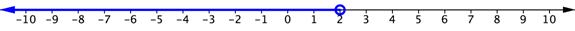
x ≤ −4
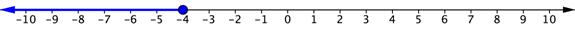
x ³ −3
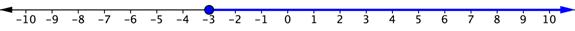
Cada una de estas gráficas empieza con un círculo — ya sea un círculo abierto o uno cerrado (rellenado). Este punto normalmente se llama punto final de la solución. Un círculo cerrado, o rellenado, se usa para representar desigualdades del tipo mayor o igual a () o del tipo menor o igual a (). El punto es parte de la solución. Un círculo abierto se usa para mayor que (>) o menor que (<). El punto no es parte de la solución.
La gráfica se extiende infinitamente en una dirección. Esto se muestra con una línea con una flecha. Por ejemplo, observa que para la gráfica de mostrada arriba, el punto final es −3, representado con un círculo cerrado porque la desigualdad es mayor o igual a −3. La línea azul se dibuja hacia la derecha del número porque los valores del área son mayores que −3. La flecha indica que las soluciones continúan indefinidamente.
Puedes resolver la mayoría de las desigualdades usando los mismos métodos que al resolver ecuaciones. Las operaciones inversas pueden usarse para resolver desigualdades. Esto es porque cuando sumas o restas el mismo valor a ambos lados, estás manteniendo la desigualdad. Estas propiedades se presentan en el recuadro siguiente.
|
Propiedades de Suma y Resta de la Desigualdad Si a > b, entonces a + c > b + c Si a > b, entonces a − c > b − c
|
Como las desigualdades tienen múltiples soluciones, representar las soluciones gráficamente provee una ayuda visual de la situación. El ejemplo siguiente muestra los pasos para resolver y graficar una desigualdad.
| Ejemplo | |||
| Problema | Resolver x. 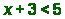 |
| |
|
| Despejar la variable restando 3 de ambos lados de la desigualdad. | ||
| Respuesta | x < 2 |
| |
La gráfica de la desigualdad x < 2 se muestra a continuación.
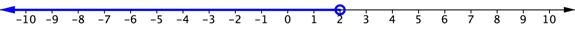
Al igual que en las ecuaciones, en las desigualdades puedes comprobar la solución. Primero, comprueba el punto final sustituyéndolo en la ecuación relacionada. Luego comprueba si la desigualdad es correcta sustituyendo cualquier otra solución para ver si es una de las soluciones. Como hay múltiples soluciones, es una buena práctica comprobar con más de una solución posible. Esto también puede ayudar a comprobar que tu gráfica es correcta.
El ejemplo siguiente muestra cómo puedes comprobar que x < 2 es la solución de x + 3 < 5.
| Ejemplo | ||||
| Problema | Comprueba que x < 2 es la solución de x + 3 < 5. |
| ||
| 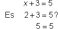 | Sustituye el punto fina 2 en la ecuación relacionada, x + 3 = 5. | |||
| 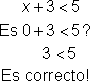 | Escoge un valor menor que 2, como el 0, para comprobar la desigualdad. (Este valor estará en la parte sombreada de la gráfica.) | |||
| Respuesta | x < 2 es la solución de x + 3 < 5. |
| ||
Los siguientes ejemplos muestran problemas adicionales de desigualdad. La gráfica de la solución a la desigualdad también se incluye. Recuerda comprobar tu solución. ¡Es un buen hábito!
| Ejemplo Avanzado | |||
| Problema | Resolver x. 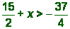 |
| |
|
| Restar de ambos lados para despejar la variable. | ||
| Respuesta |
|
| |
| Ejemplo | |||
| Problema | Resolver x. 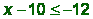 |
| |
|
| Despejar la variable sumando 10 a ambos lados de la desigualdad. | ||
| Respuesta | x −2 |
| |
La gráfica de esta solución se muestra abajo. Observa que se usa un círculo cerrado porque la desigualdad es “menor o igual a” (). La flecha azul se dibuja a la izquierda del punto −2 porque estos son los valores que son menores que −2.
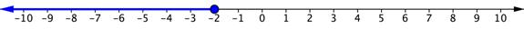
| Ejemplo | |||||
| Problema | Comprueba que es la solución de |
| |||
|
| 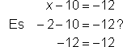 | Sustituye el punto final −2 en la ecuación relacionada – 10 = −12. | |||
|
| 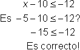 | Escoge un valor menor que −2, como −5, para comprobar la desigualdad. (Este valor estará en la parte sombreada de la gráfica.) | |||
| Respuesta | es la solución de |
| |||
| Ejemplo | |||
| Problema | Resuelve a.
|
| |
|
| Despeja la variable sumando 17 a ambos lados de la desigualdad. | ||
| Respuesta |
|
| |
La gráfica de esta solución se muestra abajo. Observa que se usa un círculo abierto porque la desigualdad es “mayor que” (>). La flecha se muestra a la derecha del 0 porque estos son los valores mayores que 0.
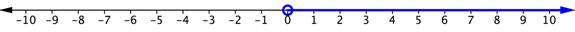
| Ejemplo | |||
| Problema | Comprueba que 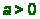 es la solución de . | ||
| 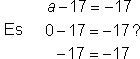 | Sustituye el punto final, 0 en la ecuación relacionada. | ||
| 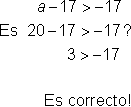 | Escoge un valor mayor que 0, como 20, para comprobar la desigualdad. (Este valor estará en la parte sombreada de la gráfica.) | ||
| Respuesta | es la solución de |
| |
| Pregunta Avanzada Resolver x:
A) x ≤ 0 B) x > 35 C) x ≤ 7 D) x ≥ 5
|
Resolver una desigualdad con una variable que tiene un coeficiente distinto de 1 normalmente implica la multiplicación o la división. Los pasos son parecidos a la solución de ecuaciones de varios pasos con multiplicación o división EXCEPTO por el signo de desigualdad. Veamos lo que pasa con el signo de desigualdad cuando multiplicas o divides cada lado por el mismo número.
| Empecemos con un enunciado válido: | 10 > 5 |
| Intentémoslo de nuevo empezando con el mismo enunciado válido: | 10 > 5 |
| Ahora, multiplica ambos lados por el mismo número positivo: | 10 • 2 > 5 • 2 | Esta vez, multiplicamos ambos lados por el mismo número negativo: | 10 • −2 > 5 • −2 | |
| 20 es mayor que 10, por lo que la desigualdad sigue siendo válida: | 20 > 10 | ¡Espera un momento! −20 no es mayor que −10, por lo que tienes un enunciado inválido. | −20 > −10 | |
| ¡Cuando multiplicas por un número positivo, dejas el signo de desigualdad como está! |
| Debes “revertir” el signo de desigualdad para hacerlo un enunciado válido: | −20 < −10 |
Cuando multiplicas por un número negativo, debes “revertir” el signo de desigualdad.
Siempre que multiplicas o divides ambos lados de la desigualdad por un número negativo, el signo de la desigualdad debe revertirse para mantener el enunciado válido.
Estas reglas se resumen en el recuadro siguiente.
|
Propiedades de la Multiplicación y la División de la Desigualdad
Si a > b, entonces ac > bc, si c > 0 Si a > b, entonces ac < bc, si c < 0
Si a > b, entonces , si c > 0 Si a > b, entonces , si c < 0
|
Ten en cuenta que sólo cambias el signo cuando multiplicas o divides por un número negativo. Si sumas o restas un número negativo, la desigualdad no cambia.
| Ejemplo Avanzado | |||
| Problema | Resolver x. 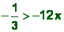 |
| |
|
| Divide ambos lados entre -12 para despejar la variable. Como estás dividiendo entre un número negativo, debes cambiar la dirección del signo de desigualdad. | ||
|
Comprobar | ¿Es ?
¿Es ?
¡Correcto! | Comprueba tu solución primero con el punto final , en la ecuación relacionada.
Escoge un valor mayor que , como 2, para comprobar la desigualdad. | |
| Respuesta |
|
| |
| Ejemplo | |||
| Problema | Resolver x. 3x > 12 |
| |
|
|
| Divide ambos lados entre 3 para despejar la variable. | |
|
| 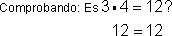
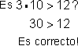 | Comprueba tu solución con el punto final 4, y luego comprueba otra solución de la desigualdad. | |
| Respuesta |
|
| |
La gráfica de esta solución se muestra abajo.
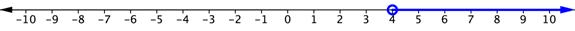
No hubo necesidad de hacer ningún cambio al signo de la desigualdad porque ambos lados se dividieron entre un 3 positivo. En el siguiente ejemplo, hay una división entre un número negativo, ¡por lo que hay un paso adicional en la solución!
| Ejemplo | ||||
| Problema | Resolver x. −2x > 6 |
| ||
|
|
| Divide cada lado de la desigualdad entre −2 para despejar la variable, y cambia la dirección del signo de desigualdad porque divides entre un número negativo. | ||
|
|
|
| ||
| 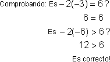 | Comprueba tu solución con el punto final −3, y luego con otra solución para la desigualdad. | |||
| Respuesta |
|
| ||
Ya que ambos lados de la desigualdad fueron divididos entre un número negativo, −2, el símbolo de desigualdad tuvo que ser cambiado de > a <. La gráfica de esta solución se muestra abajo.
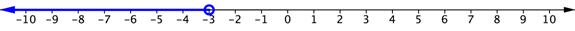
| Resolver y: −10y ≥ 150
A) y = −15 B) y ≥ −15 C) y ≤ −15 D) y ≥ 15
|
| Pregunta Avanzada Resuelve a:
A) B) C) D)
|